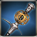

Key
Change Equip.
When click Wiki Guide Button, goes to Wiki Page
Attributes
Rating: 50
ASPD: 20
ATK: 600
Fire PEN: 50
Ice PEN: 50
Light.PEN: 50
Mental PEN: 50
Phys.PEN: 50
LifeLess ATK: 120
UnDead ATK: 120
WildLife ATK: 120
Human ATK: 120
Demon ATK: 120
ASPD: 20
ATK: 600
Fire PEN: 50
Ice PEN: 50
Light.PEN: 50
Mental PEN: 50
Phys.PEN: 50
LifeLess ATK: 120
UnDead ATK: 120
WildLife ATK: 120
Human ATK: 120
Demon ATK: 120
 Rough green jewel x1
Rough green jewel x1 Mana stone x10
Mana stone x10 Aidanium x66
Aidanium x66 Chalcedony x66
Chalcedony x66 Fool Stone x1
Fool Stone x1 Emerald piece x1
Emerald piece x1 Etretanium x66
Etretanium x66 Refined Talt x66
Refined Talt x66 Emerald x1
Emerald x1 Juniper x18
Juniper x18 Silver Piece x66
Silver Piece x66 Refined Quartz x66
Refined Quartz x66 Composite steel x21
Composite steel x21 Enchantchip Lv 76 x2
Enchantchip Lv 76 x2 Royal Emerald x1
Royal Emerald x1 Devils whisper x1
Devils whisper x1 Magic Weapon Crystal - Lv 35 x2
Magic Weapon Crystal - Lv 35 x2 Star Stone x100
Star Stone x100 Symbol of Naraka x100
Symbol of Naraka x100 Enchantchip Expert x50
Enchantchip Expert x50 Elemental Jewel x20
Elemental Jewel x20 Green Ticket of Arsene Circus x1
Green Ticket of Arsene Circus x1 Archangel heart x1
Archangel heart x1 Seed of Yggdrasil x1
Seed of Yggdrasil x1 Seirens scale x1
Seirens scale x1 Shiny Crystal x300
Shiny Crystal x300 Dragon Heart x1
Dragon Heart x1 Snail shell x30
Snail shell x30 Moon Stone x3
Moon Stone x3 a lump of Platinum x1
a lump of Platinum x1 Ancient Rune - Ti x50
Ancient Rune - Ti x50 liquid of Heaven x10
liquid of Heaven x10 Wheel of Time x100
Wheel of Time x100 Armonias Holywater x10
Armonias Holywater x10 Devils Dream x100
Devils Dream x100 Pure Essence x1000
Pure Essence x1000 Fallen Essence x1000
Fallen Essence x1000 Balance Essence x1000
Balance Essence x1000 Warped weapon debris x1500
Warped weapon debris x1500 Symbol of HolyKnight x100
Symbol of HolyKnight x100 Symbol of DarkPriest x100
Symbol of DarkPriest x100 Armonium Ore - Blue x20
Armonium Ore - Blue x20 Armonia Token x200
Armonia Token x200 Symbol of Dark Shodow, G x200
Symbol of Dark Shodow, G x200 Symbol of Patrikyon x200
Symbol of Patrikyon x200 The Rune of Talos, Shiny Corazon x50
The Rune of Talos, Shiny Corazon x50 Shiny Sollarion x300
Shiny Sollarion x300 TimePiece : Rose x500
TimePiece : Rose x500 Vertrauen Symbol x1
Vertrauen Symbol x1 Star Essence x50
Star Essence x50 Armonium Ore - Black x10000
Armonium Ore - Black x10000 kryptonite x200
kryptonite x200